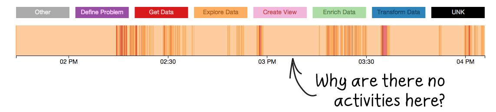

Go to
http://xd-draper.xdata.data-tactics-corp.com:1337
and see if the logs represent how your tool is being used.

// web worker url
var worker = 'js/draper.activity_worker-2.1.1.js'
var ac = new activityLogger(worker);
.testing(true) // simulate POST, won't send log
.echo(true) // log to console
.mute(['SYS']); // don't log SYSTEM actions
ac.registerActivityLogger(
"http://xd-draper.xdata.data-tactics-corp.com:1337",
"my-component",
"v0.1"
);
$('#button').mouseenter(function() {
ac.logUserActivity(
'User hovered over element to read popup', // description
'hover_start', // activity_code
ac.WF_EXPLORE // workflow State
);
})
ac.logSystemActivity('asking server for data.');
$.getJSON('https://my_endpoint/get_data', data, function(data) {
ac.logSystemActivity('received data from server.');
$("#result").text(data.result);
});
Go to
http://xd-draper.xdata.data-tactics-corp.com:1337
and see if the logs represent how your tool is being used.